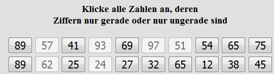

Im nachfolgenden Test sehen Sie jeweils 100 zweistellige Zahlen.
Ihre Aufgabe besteht darin, so schnell wie m�glich, aber dennoch
korrekt
diejenigen Zahlen (mit linker Maustaste) nacheinander
anzuklicken,
die entweder nur ungerade oder nur ungerade Ziffern
beinhalten
( z.B. 17, 95, 42, usw.) - nicht jedoch 12, 76,
81 usw.
Beispiel
Sie sehen unten einen Ausschnitt aus
den ersten 20 Zahlen

Die hier markierten Zahlen sind richtig.
Sie sollten nur einmal die Zahlen z�gig ohne R�cksprung durchgehen
und
so schnell wie m�glich, aber dennoch korrekt antworten.
Am Ende
sofort den Button "Bearbeitung best�tigen" anklicken!
Es folgt dann
noch ein Durchgang, den Sie genauso bearbeiten sollten.
Zun�chst ein Probebeispiel mit 16 Zahlen